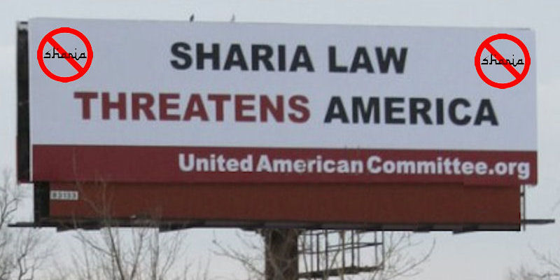
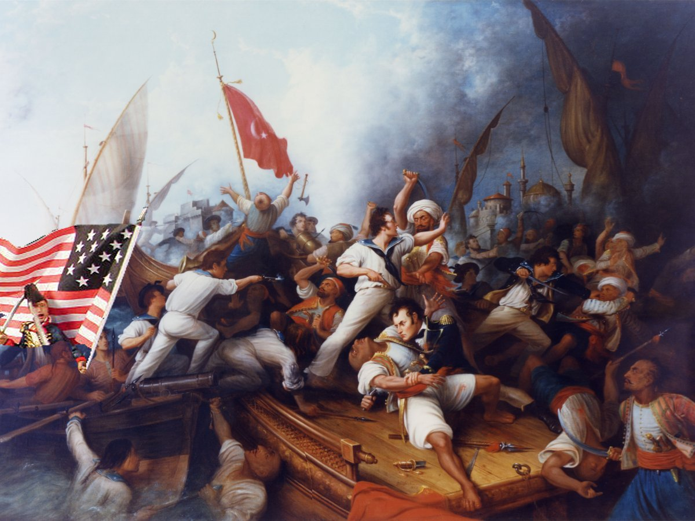

|
 |

|
|
The Rest of the Story

Thoughts on Obama's Lecture: He used their language because he knows it. The teachings of Mohammed flowed naturally off of his lips, because he was raised with it. Earlier he announced to the world in his book that the most beautiful sound in the world in the Islamic call to prayer. He also once announced that if political winds ever turned against Islam, that he would stand with Islam...and that is what he is doing. When you couple all of this with his abject insistance on bringing almost exclusively Islamic refugees from Syria to this country at a time when our own FBI and other intelligence agencies have frankly told us that they cannot vet them, and in light of the punctuation of that in Paris and in San Bernardino...and with the President making this lecture at a Mosque that has been tied to the Muslim Brotherhood, lecturing Americans when American blood has been shed, is it any wonder that this President would say things like: "For more than a thousand years, people have been drawn to Islam’s message of peace. And the very word itself, Islam, comes from salam -- peace. The standard greeting is as-salamu alaykum -- peace be upon you. And like so many faiths, Islam is rooted in a commitment to compassion and mercy and justice and charity. Whoever wants to enter paradise, the Prophet Muhammad taught, “let him treat people the way he would love to be treated.” For Christians like myself, I’m assuming that sounds familiar." For all the world, the President sounds more like a recruiter or missionary for Islam more than he sounds like a President of the United States.
Here's the Deal about Sharia Law: The propblem is...many of them are just that. And why? Because the underlying teaching of Sharia Law teaches principles that indoctrinate against the US, against Christianity, against other religions, and against our Constitution. It's very basis is rooted in the idea that God's Law is Sharia Law and that mankind must either adopt it or bow down to it in this life. That set of laws extends to rules, regulations, and practises at the secular level, Mr. President, and not only spiritually, but physically forces compliance amongst the adherants, adn the desire to spreadt that adherance to all people. That compulsion regardng dress codes, legal matters, lands, property, gender behavior, etc., etc. is abjectly anti-Constitutional, ant-Bill of rights, and completely incompatible with the most fundamental, foundational principles that America is built upon.
 Sharia Law is incompatible with the U.S. Constitution
Islamic Principle of Taqiyya: It is called Taqiyya, and it is the Islamic principle that allows Muslims to lie to any infidel in order to further the ultimate aims and goals of Islam. Is that what we heard from the Mosque in Batlirmore, Mr. President? Each must decide for themselves. One thing is certain, in that speech the President cherry picked quotes from people like Jefferson to back up his rediculous assertion that Islam had anything to do with the founding of the US or its early history.
Early American History and Islam: Do most Americane even know who it was against? It was against the Islamic terrorists of his day, the Barbary Pirates.
When Jefferson wanted authorization to conduct war against the Barbary Pirates because of their barbaric acts (hint...can use see where the term barbaric comes from?), when speaking about why these people were committing those barbaric acts, he wrote a letter, referring to what one of the Barbary leaders at the time said rgearding their beliefs with respect to their piracy, enslavement, and beheddings:
Hmmm...doesn't that sound very familiar as well Mr. President? The Congress authorized the war and Jefferson sent the US Navy and US Marines who defeated them. The famous US Marine Hymm tells us where...at the "shores of Tripoli."
 Victory at Tripoli You see Mr. President, the long history that the US has with Islam is in fact a long history of fighting and defeating Islamic tyranny rooted in Sharia Law. Sad that you cannot be truthful about this...but this was the principle dealing that Thomas Jefferson had with Islam in his day. You also indicated that even John Adams, our third President, had a Koran, but you failed to tell us what he learned from it.
Perhaps the best source for that learning would be to examine what his own son, John Quincy Adams, the sixth President of the United States, had to say :
Note, Mr. President, that John Quincy Adams had studied the issue...and his ire was directed at the founder of the religion and what that founder genned up, and what it produced for 1200 years to his day. Who are we to believe about early American history, Mr. Obama? The man who told us we could keep our plan...keep our doctors...etc? Or Thomsas Jefferson and John Quincy Adams themselves? If America wants to know the true history of Islamic dealings with early America...listen to Thomas Jefferson and John Quincy Adams themselves...not someone who is apt to be practising Taqiyya.
It's not a Time for Flowery Words: The truth is that the dogma and underlying principles that creates Al Qaeda, ISIS, Boca Raton, and others ...and which drives fundamental Islamic States like Iran...is exactly what John Quincy Adams stated, the tyranny iminating forth from Mohammed himself which today is firmly rooted in Sharia Law. This is what is used to attract hundreds of thousands of active fighters and millions of adherants all over the world. They point to many quotes within the Koran from Mohammed himself, they point to the history of Islamic conquering, and they say that since the west perverts Sharia Law, it needs to be either conquered or wiped out. Today we see them exporting that way of thinking via millions of refugees whom they infitrate and then send to Europe...and President Obama wants to bring them here.

What I Think: For a start, it is simple. Trump is right. Stop all Islamic immigration to the United States until we can properly vet them. And how do we help vet them? Well, do all we can to assertain whether or not they believe in Sharia Law. If it is found that there is any chance that they believe in Sharia Law, they do not come here. Period. And here at home, if Sharia Law is taught in a Mosque, then that Mosque should no longer be considered a church under the law. It becomes a place of political indoctrination, wholly incompatible with and subversive to the US Constitution. Either disavow Sharia Law...completely...or be deported. That should be the law against what amounts to an assault on everyone's liberty and freedom. BTW, the vast majoirty of Muslims in the past who have fled places like Iran and other hard line Sharia Law states have done so to escape Sharia Law...and that is fine with me. Those are people, who if they sincerely hold an aversion to Sharia Law, will most probably make good Americans, and will themselves speak out against it. Such actions against Saria Law would not be against their religion per sey...it would be against subversion and treason...which are already on the books. But those are just my thoughts and opinions on the matter.
Jeff Head
See the following links for some of my "straight talk" messages to all Americans:
My Message on Islamic Terrorism |
FINE ALL-AMERICAN, LIBERTY ORIENTED BOOKS AUTHORED BY JEFF HEAD
 Dragon's Fury - World War Against America and the West: Following great success in the War on Terror, politicians and analysts alike thought that future global conflict was impossible...but they were wrong. Journey into a possible future where Islamic terrorists sharpen their horrific skills & ally with Red China. In such a future, can the U.S. & western civilization survive? |
 The Stand at Klamatjh Falls: How rural western farmers and their supporters stood up to entrenched environmentalism, activist judges, and agencies of the Federal Government in southwestern Oregon...and prevailed. |
BACK TO JEFFHEAD.COM
Copyright © 2015 by Jeff Head, All Rights Reserved